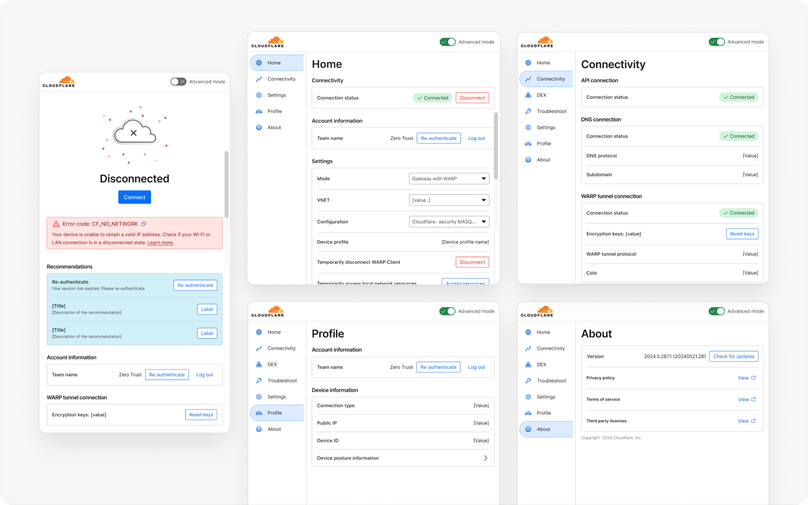
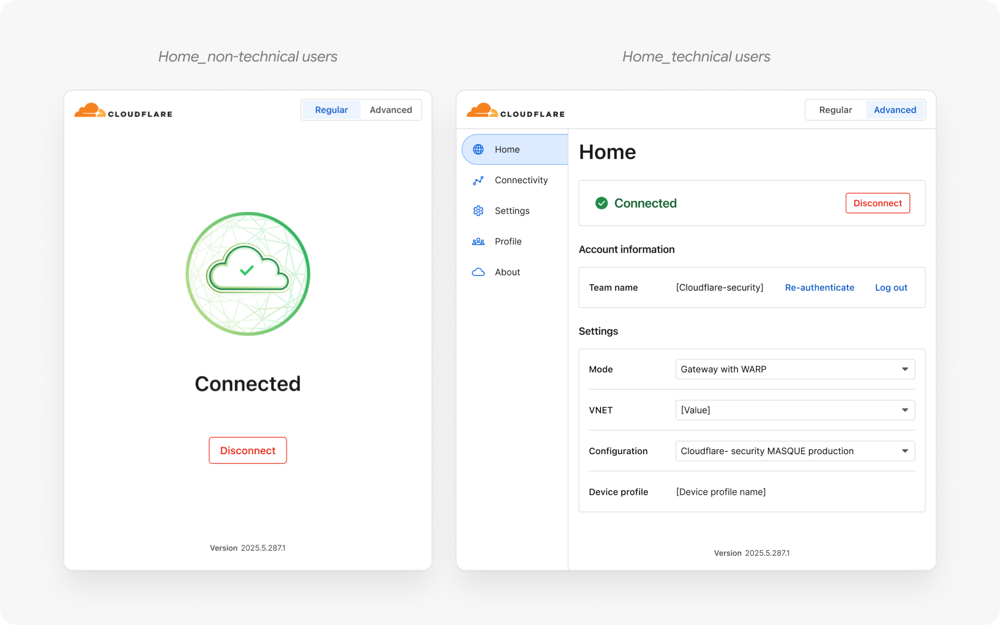
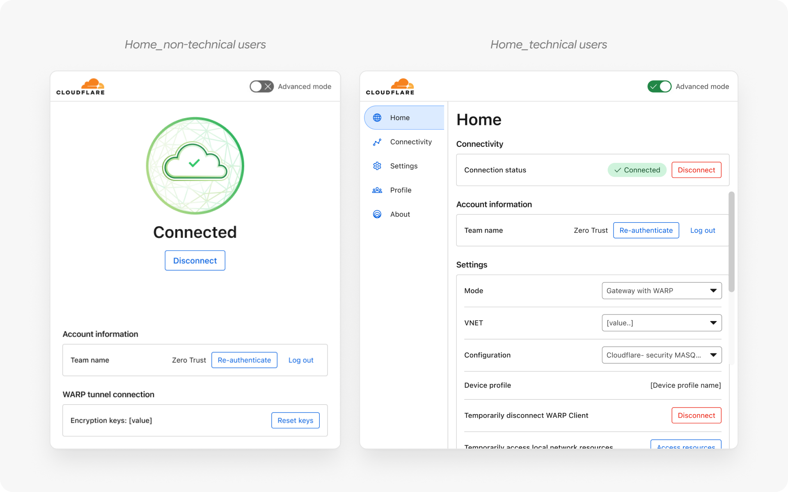
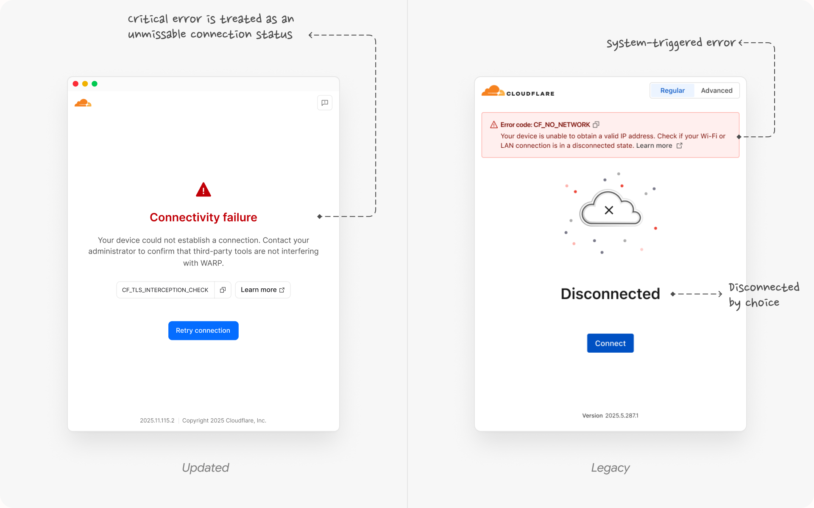
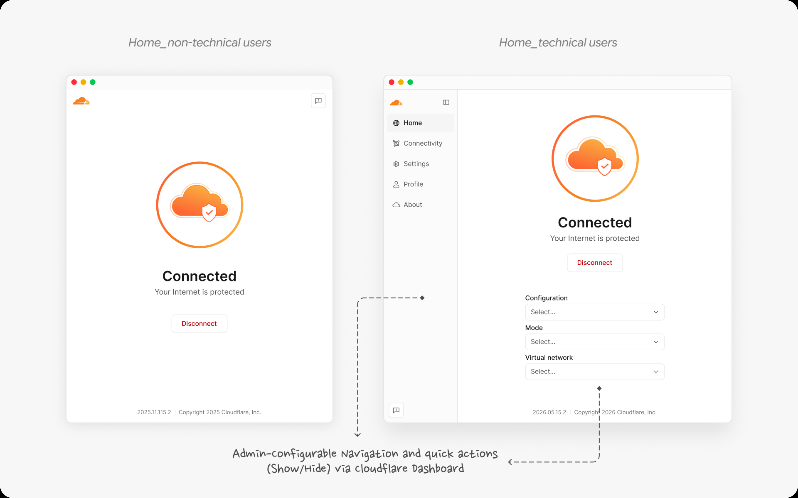
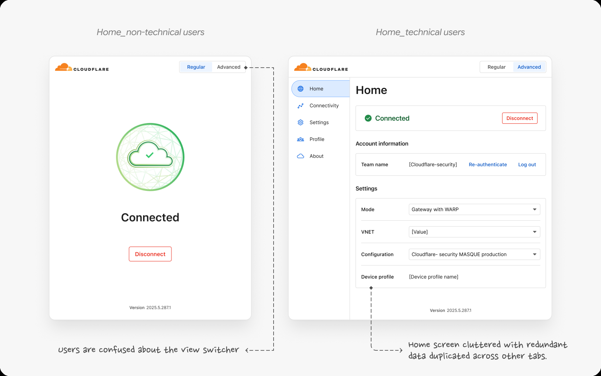
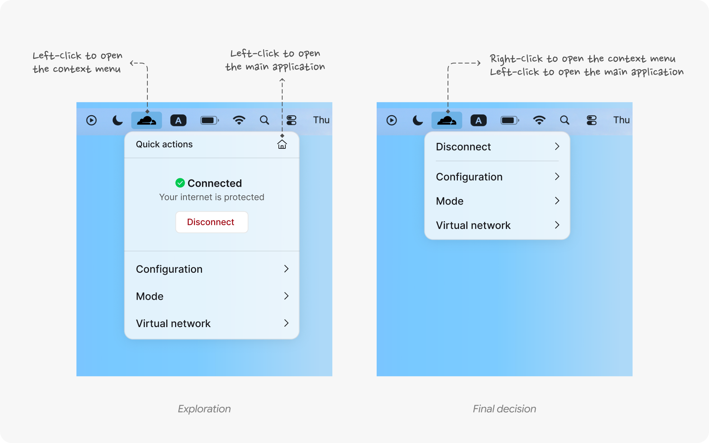
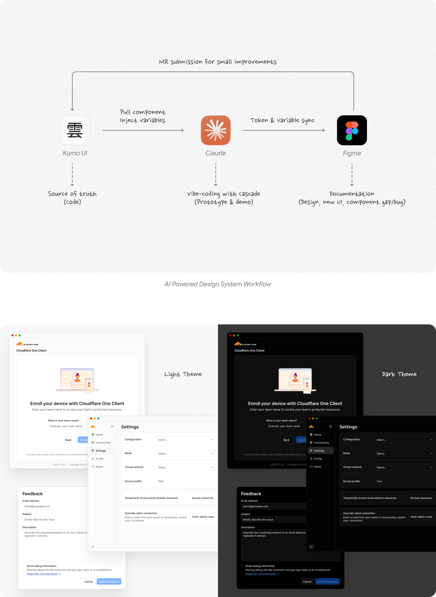

Cloudflare One Client: Redesigning Enterprise Security
Cloudflare One Client is an enterprise desktop and native mobile application that secures corporate data and networks. It acts as a secure gateway for employees to safely connect to their company's internal tools and systems, no matter where they are working from.
This project was a complete redesign of a legacy application, and I joined late in the process as the sole designer to define a design strategy for our phased launch, and align our cross-functional team of 20+ people. Working with this team was incredibly rewarding. Together, we hit our launch target on an aggressive timeline while completely elevating the core product experience.

- Timeline

- 4 months (2025-2026)
- Scope
- End-to-end product design
Design system integration
Cross-functional alignment - Deliverables
- Desktop (Windows, MacOS, Linux)
Mobile (Android & iOS) - Role
- Lead product designer
- Core team
- 2 Product managers
8 Engineers - Extended team
- 10+ cross-functional partners across design, product and engineering leadership, Project Manager, QA, Content Designer, Brand, Animation, and etc...
The Challenge
I joined late in the process when engineering was already 80% done with an MVP based on an outdated 2-year-old design. The app suffered from severe UX debt—missing user flows, edge cases, error states, and an outdated design system and visual.
I led end-to-end design across desktop and mobile native apps, collaborated with cross-functional partners to define the design strategy for product launch.

Strategy & Approach
To hit our aggressive deadline without halting development, I mapped out a phased approach involving user research to validate design decision and improve the product experience. Instead of trying to fix everything at once, we broke the launch down into three milestones:
MVP
Internal Dogfooding
- Feature-complete
- Minor UI updates
- Getting the app into internal users' hands as fast as possible.
Beta
Internal Dogfooding & External Testing
- Major visual & UI Polish
- Fixing core usability issues based on user feedback
- Running surveys and customer calls
GA
General availability
- Fixing critical friction based on user research from Beta
- Shifting to a public launch with high-quality craft and refined details.
Feature-Complete MVP: Accelerating Internal Dogfooding
To meet an aggressive timeline and unblock frontend development, I prioritized feature completion over visual polish for MVP. I partnered closely with engineering to design critical foundational flows—including onboarding, authentication, complex settings, and error handling.
We temporarily accepted visual UI debt to ship fast. This pragmatic trade-off enabled immediate internal dogfooding across 4,000+ Cloudflare employees, giving us the leverage and telemetry data needed to drive the Beta/GA experience overhaul.


Post MVP Feature Highlight: Re-Architecting Error & Recovery
During post-MVP dogfooding and tests, we discovered that backend connection failures were being grouped under standard "Disconnected" states with temporary banners.
The Problem
In the legacy and mvp design, system errors were treated as a standard "Disconnected" state with an error banner. This was conceptually inaccurate and caused users to assume the app was simply turned off rather than experiencing an active connection failure.
 The Solution
The Solution
I re-architected the application’s state model to establish Error as a primary connection status. By explicitly separating "Disconnected by choice" from "Error due to system failure," we provided immediate visual clarity through a prominent, unmissable status indicator right at the core focal point.
Additionally, I partnered with Content Design to audit, consolidate, and categorize 40+ disparate error messages into 4 structured tiers, creating a single, scalable UI template to handle all error states consistently.

User Research & Core Friction
Once Beta were live, I sent out surveys and hopped on customer calls to see how the app performed in real daily workflows. I collected 87 responses from internal employees. 65% of users rated the client as "somewhat" or "extremely" easy to use. There is also a long list of problems we discovered, I will focus on two critical launch-blocking friction points.
Friction 1 - Home Screen Information Architecture
The Problem
The first launch blocker was a confusing Home Screen architecture. Originally, the app was split into two views: a 'Simple' view for non-technical users and an 'Advanced' view for technical users. Beta data proved users misunderstood the view-switcher, mistaking it for a security setting, while technical users found the advanced view cluttered with redundant data.
The Solution
I eliminated the switcher entirely and merged both views into a single, clean home screen. I kept the core connection status front-and-center for everyone, while embedding three quick-action fields for technical users. To handle customization, we enabled IT admins to configure views directly from the dashboard. This required zero custom client UI, saving engineering time while giving users total clarity.


Friction 2 - Spatial Disruption & Desktop Workflow
The Problem
The second major challenge was spatial: the MVP launched as a heavy standalone window in the center of the screen, physically blocking users' active workspaces. Beta feedback was loud—technical users demanded the return of our legacy compact tray utility for quick actions.
The Limitation
Building custom drawer UI was impossible on our tight timeline. Analyzing our user data with the PM, we discovered that technical users who actually needed quick actions made up less than 10% of our user base. The remaining 90% simply left the app running in the background.
The Solution & Tradeoff
Balancing engineering feasibility with user needs, We decided on a lean compromise: we kept the main window for core workflows, but added a right-click context menu to the tray icon. This allowed power users to deploy a lightweight quick-action overlay—mimicking the legacy tray behavior with zero heavy development overhead.

Polish with the New Design System and Visual
Once we achieved feature complete, it’s time to modernize UI and visual. We spent the remaining months transforming the client into a more functional, usable and polished product.
1. Adopting to new design system with AI
Kumo is our company’s new design system. Because Kumo lived natively in code and evolved weekly without a Figma library, keeping static design files synced was impossible. Since engineers didn't have bandwidth to build a new workflow pipeline together, I built my own bridge.
I used Windsurf to vibe-code an interactive UI prototype locally, pulling live tokens directly from the Kumo repo. While building, I caught dark-mode token mapping bugs—fixing simple button borders directly via MRs and documenting systemic issues for the core design system team.
To supply engineering with required design assets, I used Figma MCP to sync live tokens back into Figma. One month before GA, I ran a final sync for design QA, ensuring a polished, modern launch

2. Visual Craft & Motion
Finally, we elevated the visual craft. The MVP relied on static placeholder graphics that didn't reflect an enterprise security app.
I reached out to our brand team to design on-brand visual asset. To ensure smooth implementation, I coordinated the motion handoff between our animator and frontend developers. This delivered a lightweight, responsive connection state that builds immediate trust with enterprise clients.

Outcome and Reflection
Together, we hit our launch target on an aggressive timeline while completely elevating the core product experience.
- On-Time Delivery: Successfully shipped to Public GA across macOS, Windows, and mobile within the 5-month timeline.
- Interaction based on real user feedback: Completely eliminated friction points for GA and influenced the roadmap for post GA releases.
- Leadership Takeaway: Demonstrated how an embedded designer can step into a late-stage engineering build, establish product structure under aggressive constraints, and deliver enterprise-grade craft.
Looking back, if I had more time, I’d focus on two key areas:
- Testing net-new users: Our beta relied on internal users with legacy habits. I want to study first-time users without muscle memory to measure intuitive onboarding and unmoderated troubleshooting.
- Establishing a formal code-level design contribution workflow: Having proved that vibe-coding can bridge design and engineering, I want to establish a process to push production-ready token and component code directly, saving developer time and pushing UI craft even further.
That’s all for this one!
Up Next: